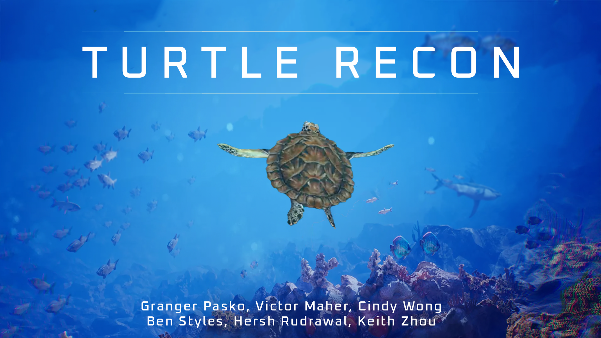
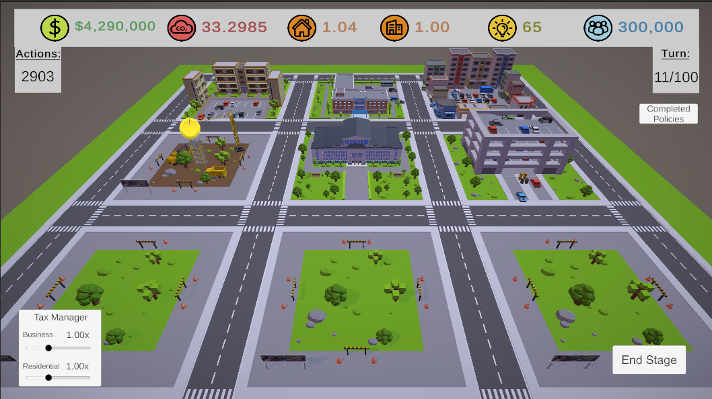

Turtle Recon

Immersive 3D rogue-like where you explore the ocean as a sea turtle. Study the ocean and pollution by collecting research tokens. Spend research tokens on upgrades and resources to clean the ocean. Complete your research to reach your end destination and win. For this, I spooled in data such as player location and timers and programmed the various classes of obstacles and their interactions with the player.
(playable on mobile, PC, Mac, Linux)
Color Runner is a 2D endless runner where you have to switch the colors of the game to see some of the obstacles that come your way. As you can see in the screenshots, some obstacles are white and some are black, so all obstacles have a 50% chance of not being visible at any given time. Slowly, the game will speed up as you survive. All assets and code in this game were written by me (except a controller script inspired by Brackey's on YouTube). Think you have what it takes? Try Color Runner
HERE
(playable on mobile, PC, Mac, Linux)
Solar Clicker is an “idle game” with the goal of clicking your sapling to collect sunlight. You use that sunlight to buy upgrades and increase your rate of collection both actively and passively. You can upgrade your tree to eventually be a full-grown oak, unlocking upgrades like the bee hive or mushrooms to really boost your solar collection, and even an upgrade to gain points while the app is closed. I developed all the code, assets, music, etc. This was also the first game I ever created. Try it HERE.
(playable on mobile, PC, Mac, Linux)

Green City Manager is a strategy game with the goal of educating the youth about climate-positive city planning and the effects humans have on greenhouse gases. Manage the city by enacting policies and building projects. Balance the happiness of the citizens and businesses. Raise the environmental and political awareness of the city’s citizens. Turn the city carbon neutral within 50 turns to win! Think you have what it takes? Try Green City Manager HERE. I spooled and manipulated those data using a system of equations applied to various variables across different classes.
(playable on mobile, PC, Mac, Linux)
PoultryGeist (In Development)
With a playable demo soon to be released, PoultryGeist is my most ambitious Unity project yet! After years of humans breeding animals for slaughter to feed its ever growing populous, the afterlife has overflowed with their souls and they are seeping into the material world. You play as "Farmer John" who is defending his farm and himself from these poltergeists. The Grim Reaper notices your efforts and offers to help; in exchange for returning the souls of the animals to him, he offers you upgrades, magic, and weapons to help you defend yourself. This top down shooter includes skilltrees, a variety of weapons and magic powers, and more. With just three developers, it's been a long process but worth every ounce of effort to see this dream come to life.
Scamit Web Scraper
Using the Beautiful Soup library, I was able to make a web scraper for the Scamit database. The Taxonomic Toolbox, as they call it, is a PHP-generated tree that represents their documented phyla, classes, families, and species. The web scraper would scan the HTML page for elements matching the user's query. The git repo is on my Git Hub. You can download it and run it in your terminal today!